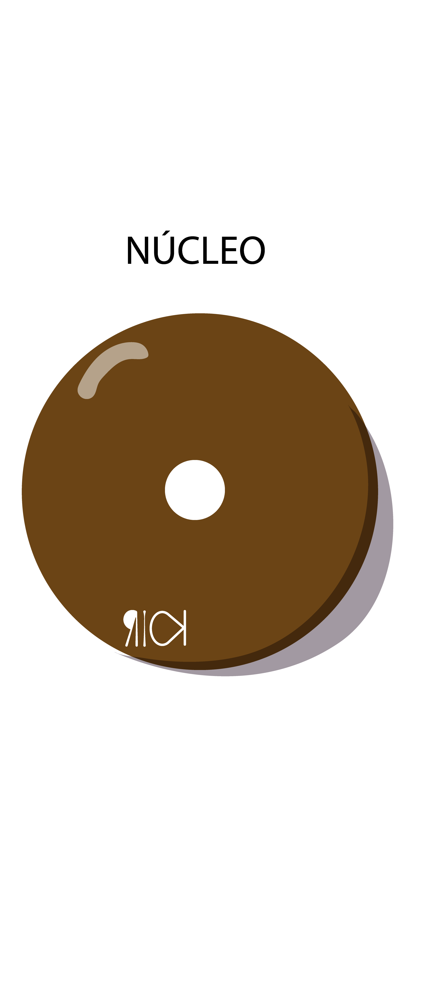
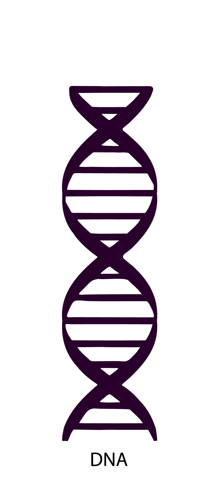
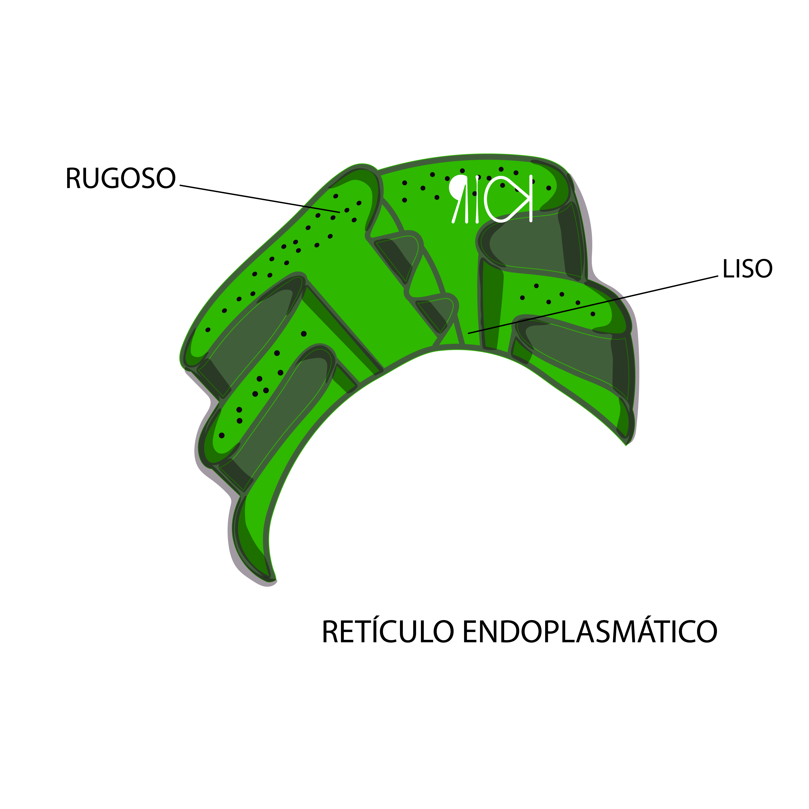
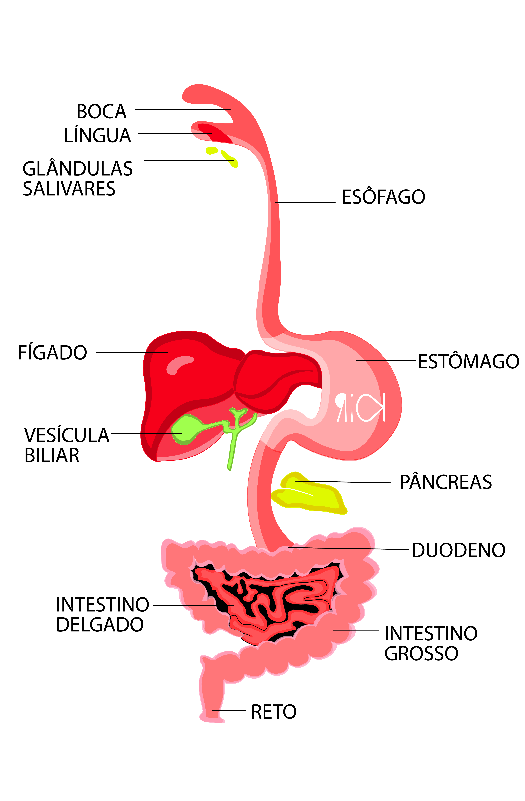
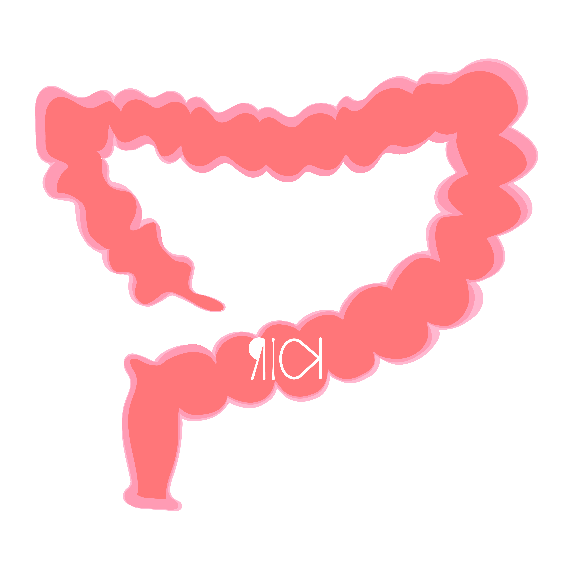
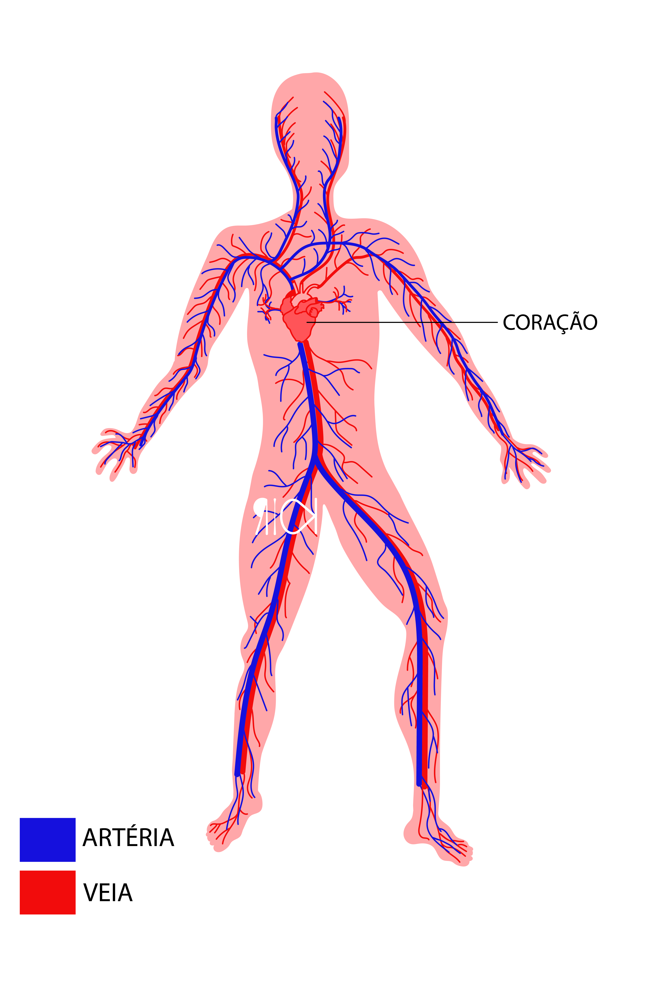
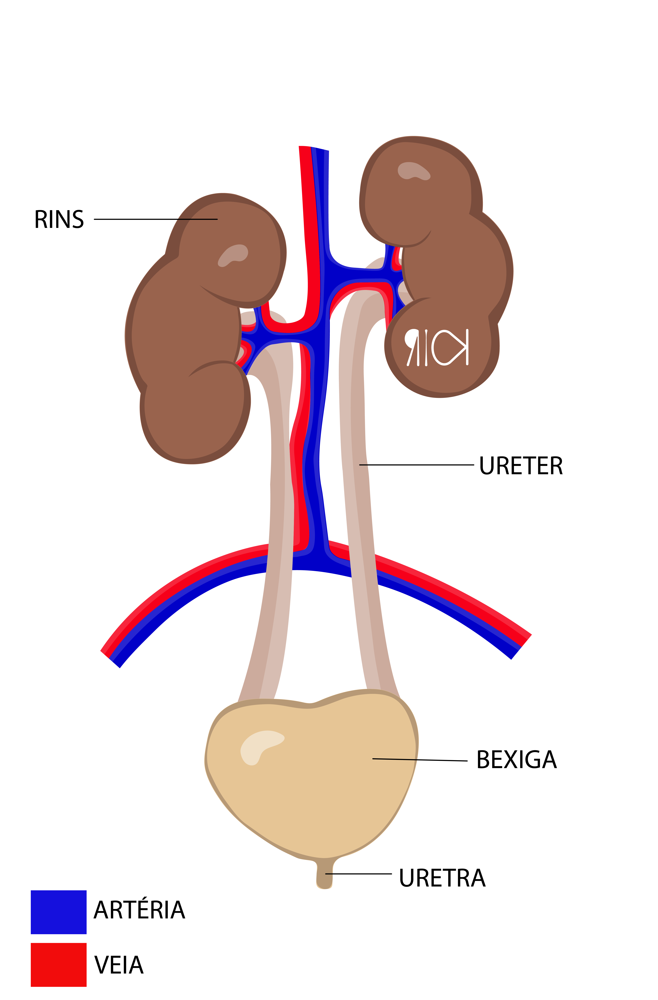

Você sabia?
Anatomia Humana
Célula, Órgãos e Sistemas
Célula
A célula é uma unidade microscópica estrutural e funcional presente em todos os seres vivos dos mais simples aos mais complexos, sendo constituída fundamentalmente de material genético, citoplasma e membrana plasmática.
Célula Animal
Célula animal, é uma célula que apresenta em suas organelas o núcleo delimitado pela membrana, assim sendo considerada uma célula mais complexa que as demais possuindo organelas de suma importância.
Organelas
1- Nucléolo - produção dos componentes ribossômicos
2 - Núcleo - conservar e transmitir a informação genética na reprodução das células e regular as funções celulares. É envolvido por uma membrana (envoltório) nuclear, chamada de carioteca.
3 – DNA: Responsável pelo arquivamento dos genes
A4 - Ribossomos - produção de proteínas
5 - Retículo endoplasmático rugoso - participa da síntese e transporte de proteínas.
6 - Retículo endoplasmático Liso - participa do processo de transporte celular, além de participar da síntese de lipídios. O retículo endoplasmático liso e rugoso estão situados na mesma estrutura.
7 - Complexo golgiense - faz a secreção celular.

8 – Mitocôndrias - são responsáveis pela respiração das células.
9 - Citoplasma - nele está um fluído chamado citosol. O citoplasma tem a função de albergar as organelas e favorecer seus movimentos.
10 - Lisossomos - participam da digestão de substâncias orgânicas.
11 - Centríolos: estão ligados à organização do citoesqueleto e aos movimentos de flagelos e cílios.
Sistema digestório
O sistema digestivo ou digestório, como é intitulado pela nova nomenclatura, é responsável pela digestão dos alimentos que ingerimos., quebrando-os em partes menores para que as substâncias necessárias (nutrientes) sejam absorvidas pelo organismo. A conclusão do processo digestivo pode demorar de 12 a 24 horas, a depender da massa corporal do indivíduo ou o que consumiu.
Estomago
O estômago é um órgão participante do sistema digestório, responsável pela pré digestão e esterilização, a fim de seguirem para o intestino, onde são absorvidos os nutrientes.
O alimento entra pela boca e dá-se início ao processo de quebra enzimática, ou seja, a transformação física daquele alimento, ao se misturar com a saliva, este se transforma em uma pasta, que passa a ser chamada de bolo alimentar.
O bolo alimentar, ao chegar ao estômago entra em contato com o suco gástrico, este por sua vez é um líquido ácido que auxilia na assimilação do alimento para passar ao intestino. No suco gástrico estão presentes dois compostos químicos: a pepsina e o ácido clorídrico.
A pepsina auxilia no processo da quebra enzimática das proteínas as deixando menores.
O ácido clorídrico é responsável pelo controle de agentes patógenos, ou seja, caso algum microrganismo invasor tenha conseguido acesso a parte interna do corpo humano, ele entrará em ação, assim como também auxiliando a pepsina a intensificando.
O bolo alimentar entra em contato com o suco gástrico que é a junção de pepsina e ácido clorídrico.. assim formando o quimo, substância aquosa pode demorar cerca de 2 horas para ser processada até chegar em tal consistência para seguir até o estômago.
Pâncreas
O pâncreas é uma glândula participante do sistema digestório e endócrino, responsável pela produção de hormônios de suma importância, dentre elas a insulina, e sua função se baseia na metabolização da glicose; a somatostatina é responsável pela inibição da secreção de gastrina, do ácido gástrico e da pepsina produzidas pelo estômago, auxiliando na diminuição das secreções endócrinas e exócrinas do pâncreas e reduz a secreção de hormônio do crescimento e glucagon, responsável pelo processo inverso da insulina, ou seja, ele aumenta a quantidade de açúcar no sangue.
Duodeno
O duodeno é a denominação do início do intestino delgado, nos seres humanos, possui formato de um tubo oco, com aspecto ondulado, que se liga ao estômago e o jejuno e onde ocorre a maior parte do processo digestivo. No duodeno, ocorrem as ações dos sucos entérico e pancreático, estas enzimas auxiliam na digestão dos alimentos, principalmente dos carboidratos e das proteínas. Nesta área do sistema digestório também é considerado a parte que melhor ocorre a absorção do nutriente ferro, graças as inúmeras pregas e suas vilosidades.
Vesícula biliar
A vesícula biliar é um órgão que possui um formato semelhante a um saco, nele é armazenado a bile que promove e separação da gordura a fim de facilitar a sua absorção pelo intestino. Nesta etapa do processo é onde ocorre a transformação do quimo em quilo, que seguem para as partes finais do intestino.
Intestino Grosso
O intestino grosso é a parte final do sistema digestório, possui cerca de 1,5 metros de comprimento, onde ocorre a parte final da absorção dos nutrientes do bolo alimentar, agora chamado de quilo, assim como na a regulação da quantidade de água que será excretada junto com as fezes. O intestino grosso é formado por duas partes: o colo, porção ligada ao íleo, e o reto ligado diretamente ao ânus.
O apêndice se localiza no início do colo, esta estrutura possui a função que serve como depósito de bactérias que auxiliam na digestão. Caso alimentos e fezes se acumulem neste local, pode ocorrer uma inflamação denominada de apendicite, que pode causar dores bastante intensas e pode levar a morte se não for retirado a tempo
E assim, com os movimentos peristálticos involuntários ocorridos no intestino grosso encaminhando por fim as fezes para os ânus para excreção.
Microbiota intestinal
No corpo humano existem bactérias que mantém uma relação mútua de equilíbrio junto ao corpo humano. Estas bactérias são chamadas de microbiota intestinal.
Estas bactérias em especial atuam de uma forma benéfica para nós humanos, elas são nocivas APENAS para outras bactérias que queiram ocupar também aquele espaço. Elas ficam localizadas no intestino grosso auxiliando na absorção de nutrientes e também sendo fonte das vitaminas K (potássio) e B12.
O desequilíbrio dessa biota intestinal, pode ocasionar em doenças para o ser humano, com diarreias (desarranjo simples das bactérias) ou até levar a morte, se não for reposta e tratado adequadamente.
Sistema respiratório

O sistema respiratório é o conjunto de órgãos responsáveis pelas trocas gasosas entre o organismo dos animais e o meio ambiente, ou seja, a hematose pulmonar, possibilitando a respiração celular.
Faringe
A faringe é um órgão de formato tubular e situa-se entre a cavidade nasal e a laringe, assim como também possui ligação direta com o esôfago e com as tubas auditivas
Laringe
A laringe é um órgão de formato de tubo, sendo composto de cartilagem, músculos, ligamentos e membranas. Este órgão fica localizado no pescoço, entre a faringe e a traqueia, e possui funções como a respiração, a fala (fonação) e pôr fim do sistema digestório, a laringe evita que alimentos passem para a traqueia, por meio da epiglote, este fecha-se quando o bolo alimentar vai descer para o estômago.
A epiglote, é uma camada cartilaginosa fina e móvel. No processo de deglutição (ato de engolir) ela fecha a entrada da laringe o que impede a passagem de alimentos pelas vias respiratórias.
Na faringe, também se encontram as pregas vocais, conjunto de estruturas que vibram com a passagem do ar produzindo sons.
Traqueia
A traqueia dá continuidade a laringe, possuindo formato tubular, sendo formada por anéis cartilaginosos situando na parte superior do tórax.
Pulmões
Os pulmões são órgãos do sistema respiratório, sendo responsáveis pelas trocas gasosas entre o ambiente e a corrente sanguínea. Os pulmões possuem tamanhos levemente diferentes sendo o pulmão esquerdo menor, pelo fato de encaixar-se com o coração.
Os pulmões são envolvidos por membranas duplas, chamadas pleuras. Estas membranas são finas e ficam localizadas rentes a caixa torácica.
As pleuras, isolam e protegem o pulmão do contato direto com os ossos do corpo humano, assim prevenindo de futuros problemas e danificações pelo atrito nos movimentos de inspiração e expiração. Esses movimentos involuntários produzidos são auxiliados pelo músculo diafragma.
Alvéolos pulmonares
Os alvéolos pulmonares são minúsculos sacos aéreos, localizados no interior dos pulmões, eles são responsáveis pelo favorecimento da absorção dos gases e a passagem destes para os vasos sanguíneos. Os alvéolos são muito pequenos, por conta disso, cada pulmão possui centenas de milhões em seu interior.
Sistema Circulatório
O sistema circulatório humano é composto pelo sangue, condutores (veias e artérias) e coração. O coração é o órgão que bombeia o sangue. O sistema vascular é composto pelos vasos sanguíneos: artérias, veias e capilares.
Artérias
As artérias são canais de maior espessura, responsáveis pelo deslocamento do sangue do coração para o pulmão, retornando ao coração e seguindo para o corpo inteiro rico em oxigênio, elas são envolvidas por músculos que auxiliam no controle do fluxo de sangue, assim como a pressão necessária para que ele siga seu fluxo. Nas artérias o sangue percorre de maneira mais rápida, seguindo os batimentos do coração.
Veias
As veias são canais de maior espessura, assim como as artérias responsáveis pelo deslocamento do sangue do corpo de volta para o coração rico em gás carbônico, seguindo para o pulmão, se oxigenando novamente e retornando ao coração. As veias são envolvidas por músculos que auxiliam no controle do fluxo além da presença de válvulas que impedem que ele mude seu sentido. Nas veias o sangue percorre o corpo de uma forma mais devagar, sendo auxiliado por alguns músculos para seu retorno até o coração.
Capilares
O sangue que parte do coração, correndo pelas artérias passa por um processo de afinamento dos vasos sanguíneos, estes agora denominados de arteríolas. Estas arteríolas afinam mais ainda, agora denominadas de capilares.
Os capilares, são extremamente finos, assim possibilitando as trocas gasosas mais facilmente, além do recebimento de nutrientes entre o sangue e os tecidos.
Após a passagem para os tecidos, estes capilares se reúnem novamente de volta aos vasos sanguíneos, sendo reunidos em uma outra estrutura chamada vênulas.
Coração
O coração é um órgão oco, e por ele passa todo o sangue que deve ser bombeado para todo o corpo. Ele é composto por músculos estriados cardíacos capazes de realizar esforço constante além dos movimentos involuntários.
No interior do coração humano existem quatro cavidades. As cavidades superiores são chamadas de átrios e as camadas inferiores são chamadas de ventrículos. O sangue recebido dos pulmões é passado pelos átrios, direcionados para os ventrículos, seguindo para veias, indo em direção ao corpo inteiro.
Pequena Circulação
O sistema circulatório em parceria com o sistema respiratório é responsável pelo processo da pequena e da grande circulação. As artérias interligadas entre o pulmão e o coração, tem como função primordial a oxigenação do sangue antes que ele siga para o corpo todo.
Quando o sangue sai do coração em direção aos pulmões pela artéria pulmonar, ele vem sobrecarregado de gás carbônico, este é chamado de sangue venoso. As veias pulmonares contêm o gás oxigênio que foi recém absorvido do exterior através do ar, este sangue está repleto de oxigênio, assim o tomando a cor vermelha este é chamado de sangue arterial.
O nome deste processo é pequena circulação, pois perpassa somente entre o coração e o pulmão.
Grande circulação
Após o processo que ocorreu na pequena circulação o sangue pode seguir para as diversas partes do corpo, posteriormente retornando ao coração, fazendo o mesmo processo novamente.
Sistema urinário
O Sistema Urinário ou Aparelho Urinário é responsável pela produção e eliminação da urina, possui a função de filtrar as "impurezas" do sangue que circula no organismo. O Sistema Urinário é composto por dois rins e pelas vias urinárias, formada por dois ureteres, a bexiga urinária e a uretra.
Rins
Os rins são órgãos responsáveis em filtrar a água do nosso corpo, ou seja, através dele é repassado ao organismo os nutrientes necessários e quando detectado os excessos e componentes que são tóxicos ao corpo humano são excretados.
De cada rim sai um tubo longo e fino, chamado ureter, através dele a urina e direcionada para a bexiga urinária.
Bexiga urinária
A bexiga urinária é um órgão oco que se assemelha a uma bolsa com grande poder de elasticidade. A urina fica armazenada temporariamente na bbexiga urinária, até seguir para a uretra e ser excretada, nos homens esta estrutura tem dupla função além da condução da urina, também participa diretamente do sistema reprodutor na liberação do esperma.
Formação da urina
A formação da urina é um processo de suma importância para o corpo humano, através dela é excretado do corpo humano substâncias tóxicas e outras que estão em excesso.
No processo de filtração do sangue e formação da urina ocorre com a passagem pelos rins, assim ocorre a detecção das substâncias que estão em excesso e outras que o corpo não necessita. As substâncias necessárias retornam a corrente sanguínea, as demais são direcionadas para excreção.
Mesmo com a retirada das substâncias desnecessárias, o processo ainda se mostra insuficiente, por isso ocorre um processo que se chamado de secreção, assim sendo direcionados aos capilares sanguíneos e por fim aos tubos renais. Como acontece com alguns remédios.
Sistema esquelético
O sistema esquelético tem como função a sustentação do corpo humano, auxilia no seu formato, assim como fornece proteção para alguns órgãos como a caixa torácica que protege o coração e os pulmões. O crânio protegendo o cérebro, e por fim as costelas protegendo os órgãos internos.
Os órgãos também são responsáveis pelo armazenamento do cálcio, fosfato e alguns minerais que são de suma importância para o ideal funcionamento das células.
Os ossos liberam estas substâncias conforme a necessidade do corpo, entretendo caso esteja com pouca ou nenhuma reserva destas substâncias os ossos podem desenvolver doenças como a osteoporose que indica índices baixos de cálcio no corpo sendo retirado em suma dos ossos ocasionando em seu desgaste.
Os ossos possuem áreas de contato, essa área de contado de dois ossos ou osso e cartilagem é denominada de articulações, estas por sua vez podem ser móveis como o do joelho, semimóveis como as das vertebras e imóveis como os do crânio.
A cartilagem presente em alguns ligamentos dos ossos impede o desgaste e o atrito entre eles, permitindo seus movimentos suaves e sem danos ao corpo. Entretanto existem doenças onde ocorre a perca da cartilagem causando fortes dores nesses ligamentos por conta do atrito sofrido.
Sistema Nervoso
O sistema nervoso é responsável pelos comandos exercidos pelo cérebro e repassado aos demais órgãos, assim como sobre a percepção do mundo exterior.
O sistema nervoso é composto por cerca de 90 bilhões de neurônios, estas células são especializadas por receber e transmitir informações para o cérebro em uma rapidez ímpar. Um ótimo exemplo que pode ser dado, pode ser quando seu dedo espeta em um espinho de uma rosa e ocorre um alerta do sistema muscular, informando que um agente externo está forçando uma barreira do corpo, assim, você rapidamente sente uma pequena dor e retira o dedo daquele local para que pare de causar dano a si mesmo.
Encéfalo
Dentro do crânio (estrutura óssea) fica localizado o encéfalo. O encéfalo é considerado como a central de informações de todo o corpo humano, aqui ficam armazenadas todas as informações do ser vivo, controla as ações voluntárias como a atitude de correr, dançar ou cantar por exemplo, assim como também as involuntárias como o batimento cardíaco.
O encéfalo é formado por:
Cérebro é responsável pela as tomadas de decisões, coordenação emoções, criatividade e movimentos acontecem aqui além do sistema sensorial (visão, tato, paladar e audição).
Cerebelo é responsável pelo equilíbrio, postura corporal e coordenação de movimentos habilidosos como por exemplo andar de bicicleta, assim como também os movimentos involuntários como batimentos do coração, filtração do sangue e o ato de respirar.
Tronco encefálico é responsável pela comunicação entre a medula espinhal e o cérebro, assim como as decisões vitais que também participam no cerebelo.
Medula espinhal é responsável por conduzir as informações através dos impulsos nervosos para todas as regiões do corpo até o encéfalo, assim como coordenar atividades musculares e reflexos.